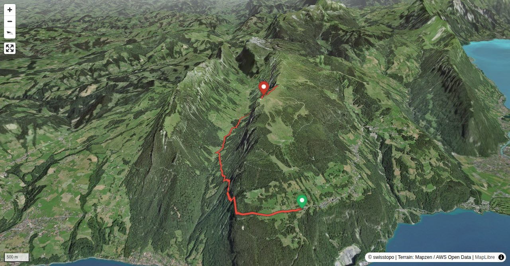

Der steile Bärenpfad weist einige exponierte Stellen und drei Leitern auf. Der Zugang führt mehrere Kilometer über asphaltierte Stasse, ist aber trotzdem eine lohnenswerte, interessante Bergwanderung. Der Ausgangspunkt gut mit ÖV erreichbar. Von Interlaken mit dem Bus, von Beatenbucht mit der Zahnradbahn.
Startet man bei der Bergstation der Drahtseilbahn Beatenbucht-Beatenberg bzw. bei der Talstation der Niederhornbahn muss man 50 Minuten der Strasse Richtung Grön/ Justistal folgen. Von hier geht es aufwärts, zuerst noch einmal 2.5 km der Strasse entlang, bevor dann der 700 Höhenmeter aufweisende Bärenpfad beginnt.
Quick Facts
| Summit elevation | 1961 m |
|---|---|
| Difficulty | SAC T4 Alpine hiking with exposure, rougher terrain, and sections that are not suitable for beginners. Guide |
| Trailhead | Beatenberg Talstation Niderhornbahn |
| Distance | 8.5 km (out-and-back) |
| Total ascent | ~956 m |
| Elevation range | 1104-1961 m |
| Route sources | SAC Route Portal |
Photos


Planning
i
i
sac_scale (precise T1–T6) with
swissTLM3D Wanderwegart
fallback where OSM is silent (coarser T2/T3 and T4+ buckets).
Coverage: OSM 42.2% · swisstopo 56.5% · unknown 0.0%.Elevations computed from the inlined GPX track (SwissTopo height API).
Loading forecast…
Start: Beatenberg Talstation Niderhornbahn (1123 m)
End: Niederhornbahn Bergstation (1930 m)
3D Terrain View

Route Details
Bärenpfad
- Startet man bei der Bergstation der Drahtseilbahn Beatenbucht-Beatenberg bzw. bei der Talstation der Niederhornbahn muss man 50 Minuten der Strasse Richtung Grön/ Justistal folgen. Von hier geht es aufwärts, zuerst noch einmal 2.5 km der Strasse entlang, bevor dann der 700 Höhenmeter aufweisende Bärenpfad beginnt. Grön kann auch mit dem PW erreicht werden. Ein Parkplatz befindet sich ca. 200 m vor der Alphütte in Richting Sigriswil. Als Variante kann auch in Merligen gestartet werden; plus 550 Hm und rund 45 Min. länger als die Hauptroute.
Terrain & safety
Die Route weist einige exponierte Stellen, drahtseilgesicherte Passagen und drei Leitern auf. Es handelt sich aber nicht um einen Klettersteig und ein Klettersteigset kann kaum sinnvoll eingesetzt werden.
Source: SAC Route Portal
Field Reference
| Trailhead | Beatenberg Talstation Niderhornbahn | 46.69080, 7.76520 |
|---|---|---|
| Summit | Niederhorn (1961 m) | 46.71168, 7.77678 |
Coordinates are WGS84 decimal degrees (lat, lon). Emergency: 112 (general) or 1414 (Rega air rescue). Page URL: